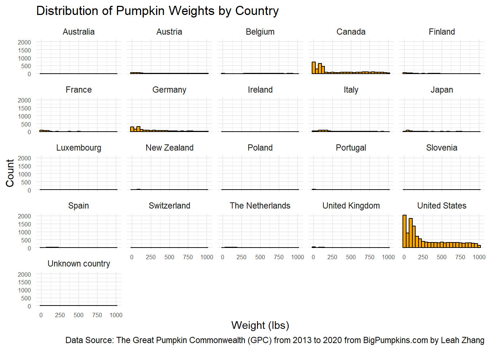
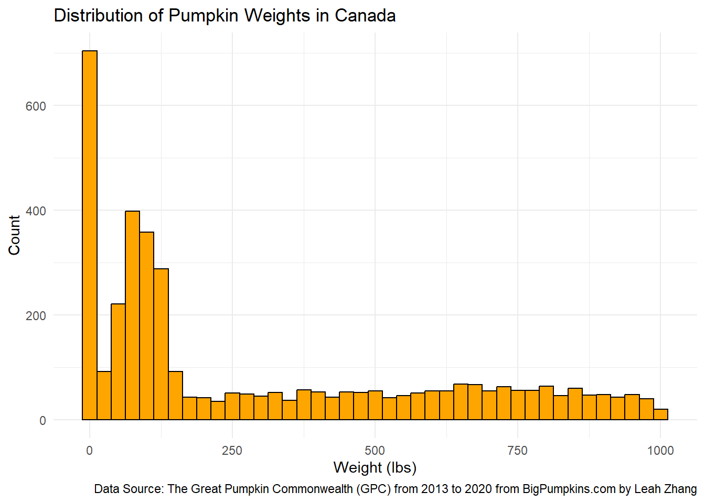

── Attaching core tidyverse packages ──────────────────────── tidyverse 2.0.0 ──
✔ dplyr 1.1.4 ✔ readr 2.1.5
✔ forcats 1.0.0 ✔ stringr 1.5.1
✔ ggplot2 3.5.1 ✔ tibble 3.2.1
✔ lubridate 1.9.4 ✔ tidyr 1.3.1
✔ purrr 1.0.2
── Conflicts ────────────────────────────────────────── tidyverse_conflicts() ──
✖ dplyr::filter() masks stats::filter()
✖ dplyr::lag() masks stats::lag()
ℹ Use the conflicted package (<http://conflicted.r-lib.org/>) to force all conflicts to become errorsAppendix C — Giant Pumpkin
# Get the Data
# Read in with tidytuesdayR package
# Install from CRAN via: install.packages("tidytuesdayR")
# This loads the readme and all the datasets for the week of interest
# Either ISO-8601 date or year/week works!
tuesdata <- tidytuesdayR::tt_load('2021-10-19')---- Compiling #TidyTuesday Information for 2021-10-19 ----
--- There is 1 file available ---
── Downloading files ───────────────────────────────────────────────────────────
1 of 1: "pumpkins.csv"---- Compiling #TidyTuesday Information for 2021-10-19 ----
--- There is 1 file available ---
── Downloading files ───────────────────────────────────────────────────────────
1 of 1: "pumpkins.csv"pumpkins <- tuesdata$pumpkins
# Or read in the data manually
pumpkins <- readr::read_csv('https://raw.githubusercontent.com/rfordatascience/tidytuesday/main/data/2021/2021-10-19/pumpkins.csv')Rows: 28065 Columns: 14
── Column specification ────────────────────────────────────────────────────────
Delimiter: ","
chr (14): id, place, weight_lbs, grower_name, city, state_prov, country, gpc...
ℹ Use `spec()` to retrieve the full column specification for this data.
ℹ Specify the column types or set `show_col_types = FALSE` to quiet this message.spc_tbl_ [28,065 × 14] (S3: spec_tbl_df/tbl_df/tbl/data.frame)
$ id : chr [1:28065] "2013-F" "2013-F" "2013-F" "2013-F" ...
$ place : chr [1:28065] "1" "2" "3" "4" ...
$ weight_lbs : chr [1:28065] "154.50" "146.50" "145.00" "140.80" ...
$ grower_name : chr [1:28065] "Ellenbecker, Todd & Sequoia" "Razo, Steve" "Ellenbecker, Todd & Sequoia" "Martin, Margaret & Glen" ...
$ city : chr [1:28065] "Gleason" "New Middletown" "Glenson" "Combined Locks" ...
$ state_prov : chr [1:28065] "Wisconsin" "Ohio" "Wisconsin" "Wisconsin" ...
$ country : chr [1:28065] "United States" "United States" "United States" "United States" ...
$ gpc_site : chr [1:28065] "Nekoosa Giant Pumpkin Fest" "Ohio Valley Giant Pumpkin Growers Weigh-off" "Mishicot Pumpkin Fest" "Cedarburg Wine and Harvest Festival" ...
$ seed_mother : chr [1:28065] "209 Werner" "150.5 Snyder" "209 Werner" "109 Martin '12" ...
$ pollinator_father: chr [1:28065] "Self" NA "103 Mackinnon" "209 Werner '12" ...
$ ott : chr [1:28065] "184.0" "194.0" "177.0" "194.0" ...
$ est_weight : chr [1:28065] "129.00" "151.00" "115.00" "151.00" ...
$ pct_chart : chr [1:28065] "20.0" "-3.0" "26.0" "-7.0" ...
$ variety : chr [1:28065] NA NA NA NA ...
- attr(*, "spec")=
.. cols(
.. id = col_character(),
.. place = col_character(),
.. weight_lbs = col_character(),
.. grower_name = col_character(),
.. city = col_character(),
.. state_prov = col_character(),
.. country = col_character(),
.. gpc_site = col_character(),
.. seed_mother = col_character(),
.. pollinator_father = col_character(),
.. ott = col_character(),
.. est_weight = col_character(),
.. pct_chart = col_character(),
.. variety = col_character()
.. )
- attr(*, "problems")=<externalptr> pumpkins_clean <- pumpkins %>%
mutate(weight_lbs = as.numeric(weight_lbs)) # This turns invalid text into NA automaticallyWarning: There was 1 warning in `mutate()`.
ℹ In argument: `weight_lbs = as.numeric(weight_lbs)`.
Caused by warning:
! NAs introduced by coercion# Then continue:
pumpkin_weight_summary <- pumpkins_clean %>%
filter(grepl("^[A-Za-z '\\-]+$", country)) %>% # keep only real country names
group_by(country) %>%
summarise(
n = n(),
mean_wt = mean(weight_lbs, na.rm = TRUE),
median_wt = median(weight_lbs, na.rm = TRUE),
sd_wt = sd(weight_lbs, na.rm = TRUE),
min_wt = min(weight_lbs, na.rm = TRUE),
max_wt = max(weight_lbs, na.rm = TRUE),
iqr_wt = IQR(weight_lbs, na.rm = TRUE)
) %>%
arrange(country)
print(pumpkin_weight_summary)# A tibble: 21 × 8
country n mean_wt median_wt sd_wt min_wt max_wt iqr_wt
<chr> <int> <dbl> <dbl> <dbl> <dbl> <dbl> <dbl>
1 Australia 5 252. 164. 187. 105. 534 245.
2 Austria 602 349. 301. 299. 0.8 995. 521.
3 Belgium 360 558. 561. 253. 1.32 1000. 361.
4 Canada 4522 294. 123 307. 0.24 999 491.
5 Finland 244 166. 87.4 195. 1 950. 233.
6 France 405 231. 94.5 274. 1.18 996. 353.
7 Germany 2175 286. 176. 278. 0.1 1000. 391.
8 Ireland 21 194. 108 228. 16.5 918 170.
9 Italy 846 305. 199. 265. 1.2 999. 385.
10 Japan 358 283. 167. 275. 7.7 992. 412.
# ℹ 11 more rowsWarning: NAs introduced by coercionggplot(pumpkins, aes(x = weight_lbs)) +
geom_histogram(fill = "orange", color = "black", bins = 25) +
labs(
title = "Distribution of Pumpkin Weights",
x = "Weight (lbs)",
y = "Count",
caption = "Data Source: The Great Pumpkin Commonwealth (GPC) from 2013 to 2020 from BigPumpkins.com by Leah Zhang"
) +
theme_minimal()Warning: Removed 5267 rows containing non-finite outside the scale range
(`stat_bin()`).
#Weight Distribution by Country
pumpkins1 <- pumpkins %>% filter(!is.na(weight_lbs))
ggplot(pumpkins1, aes(x = weight_lbs)) +
geom_histogram(fill = "orange", color = "black", bins = 25) +
facet_wrap(~ country) +
labs(
title = "Distribution of Pumpkin Weights by Country",
x = "Weight (lbs)",
y = "Count",
caption = "Data Source: The Great Pumpkin Commonwealth (GPC) from 2013 to 2020 from BigPumpkins.com by Leah Zhang"
) +
theme_minimal() +
theme(
axis.text.x = element_text(size = 6),
axis.text.y = element_text(size = 6)
)
#Look at Specific Countries
#United States
ggplot(pumpkins %>% filter(country == "United States"),
aes(x = weight_lbs)) +
geom_histogram(binwidth = 25, fill = "orange", color = "black") +
labs(title = "Distribution of Pumpkin Weights in the United States",
x = "Weight (lbs)",
y = "Count",
caption = "Data Source: The Great Pumpkin Commonwealth (GPC) from 2013 to 2020 from BigPumpkins.com by Leah Zhang"
) +
theme_minimal()Warning: Removed 3771 rows containing non-finite outside the scale range
(`stat_bin()`).#Look at Specific Countries
#Canada
ggplot(pumpkins %>% filter(country == "Canada"),
aes(x = weight_lbs)) +
geom_histogram(binwidth = 25, fill = "orange", color = "black") +
labs(title = "Distribution of Pumpkin Weights in Canada",
x = "Weight (lbs)",
y = "Count",
caption = "Data Source: The Great Pumpkin Commonwealth (GPC) from 2013 to 2020 from BigPumpkins.com by Leah Zhang"
) +
theme_minimal()Warning: Removed 672 rows containing non-finite outside the scale range
(`stat_bin()`).
#Look at Specific Countries
#Germany
ggplot(pumpkins %>% filter(country == "Germany"),
aes(x = weight_lbs)) +
geom_histogram(binwidth = 25, fill = "orange", color = "black") +
labs(title = "Distribution of Pumpkin Weights in Germany",
x = "Weight (lbs)",
y = "Count",
caption = "Data Source: The Great Pumpkin Commonwealth (GPC) from 2013 to 2020 from BigPumpkins.com by Leah Zhang"
) +
theme_minimal()Warning: Removed 196 rows containing non-finite outside the scale range
(`stat_bin()`).